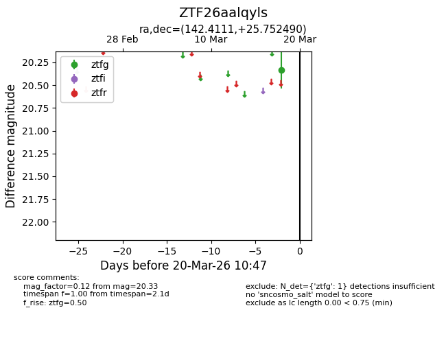
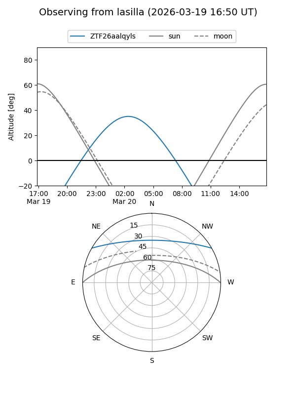
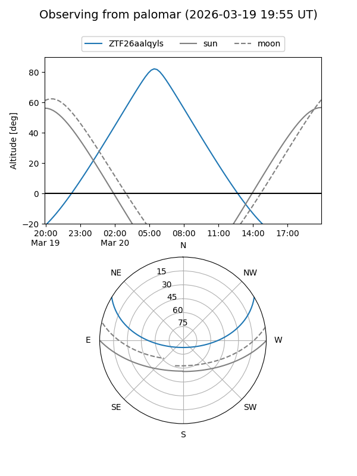

ZTF26aalqyls
Target ZTF26aalqyls at 2026-03-20 10:49
Aliases and brokers:
FINK: link
Lasair: link
ALeRCE: link
alt names
ZTF26aalqyls (ztf,fink_ztf)
Coordinates:
equatorial (ra, dec) = 142.4111,+25.75249
equatorial (HMS+DMS) = 09:29:38.67,+25:45:08.96
galactic (l, b) = (202.7150,+45.11720)
Flags:
Photometry:
last ztfg=20.33
1 ztfg detections
Lightcurve

Visibility


Additional plots